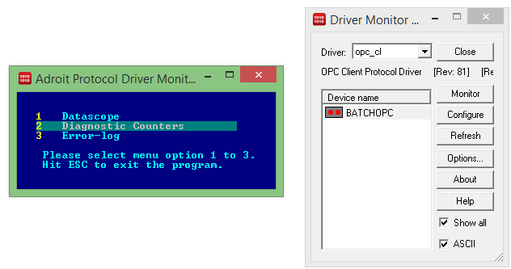
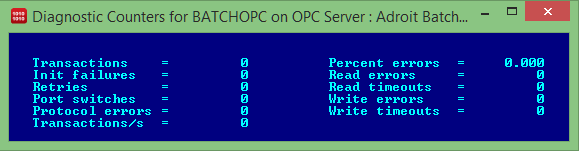

How to view the diagnostic counters of a driver's device
Introduction
When a driver is installed, it installs diagnostic counters, which provide important diagnostic information that can assist you in troubleshooting potential driver problems by helping you to understand the exact problems you are experiencing.
Prerequisites
Have Adroit 8.4 or later installed.
Note: If you are using a version earlier than this, then the method used to launch the Driver Monitor will differ.
Ensure that you have installed the required driver and created and named the necessary devices for them, each of which handle the communications to each of your front end device/s.
Ensure that the Agent Server is running.
Configuration Summary
The following steps summarise what we will be doing:
Tip: You can also do this via the Adroit Config Editor, as follows:
Launch the Adroit Config Editor utility: click Agent Server Configuration and then Driver Configuration in the right hand pane, then right click the required configured Device () of the installed Protocol
Driver () in the Installed
Drivers and Devices list and select its Diagnostics option.
Monitor the required device of an installed driver
Click the name of the required installed driver in the Driver list.
Double click the name of the required device of this driver, in the Device name list.
Note: You can create a device for this driver by pressing the INSERT key and then provide a name for it and complete its driver-specific configuration dialog.
Typically this opens a window displaying a selection screen so that you can choose which monitoring screen you want to display for this device. Unless you have specified the /SCREENn command line option in the Options... dialog of the Driver Monitor, which explicitly launches a specific screen (/SCREEN1 always displays the Datascope, /SCREEN2 always displays the diagnostic counters etc).
Display the Diagnostic Counters screen for the device
In this case click the following option: 2 Diagnostic Counters.

Note: The Error-log screen displays the
live detailed reports of all the problems taking place within the Protocol
Driver.
This opens the Diagnostic Counters screen for this device, however the information that this screen displays depends upon the operational status of the device that you are viewing. The status you can determine from the icon of the device as displayed in the Device name list, as follows:
Tip: One of the Options... of the Driver Monitor allow you to configure how fast these statuses are updated.
In this case the BATCHOPC device is idle, so the following information is displayed by the Diagnostic Counters screen:

Tip: If necessary, you can take a screenshot of this window and send it along with a Datascope log to the support.
These counters are all zeroed when the Agent Server starts, and for
some drivers, also when the device agent starts.
These diagnostic counters can be used to troubleshoot your device communication problems, by providing the following information:
“Transactions” increment every-time a transaction succeeds. A transaction
fetches one or more data points.
“Retry's” increment every-time a transaction is retried.
xxx errors increment when there is a problem communicating.
For example, Write errors increment when DTR signaling is configured but not
received; by device failure or the cable not having that line wired in.
xxx timeouts increment when no or too little data has been received on the port
in the time allotted for a transaction, resulting in a retry.
The following describes all the available counters:
Transactions:
The number of successful transactions performed by this device.
Init
failures: The number of times this device attempted to initialise
or configure the communication hardware and failed.
Retry’s:
The total count of retries performed on read or write operations.
Port
switches: If a secondary resource is allowed, this count is the
number of times the driver switched between primary and secondary channels.
Protocol
errors: This counter generally indicates invalid device responses,
which are not legal or are unrecognised.
Percent
errors: This is an indication of the communication fault frequency,
which is expressed as a percentage.
Read
errors: The number of times the driver failed to read an expected
response.
Read
timeouts: The number of times the driver failed to receive a response
to a request, within the required time.
Write
errors: The number of times the driver failed to send data because
of a hardware problem.
Write
timeouts: The number of times the driver timed out while waiting
to send data because of a hardware problem.
Transactions/sec:
This represents the number of successful transactions performed per second.

 as follows:
as follows:
 ) of the installed Protocol
Driver (
) of the installed Protocol
Driver ( ) in the Installed
Drivers and Devices list and select its Diagnostics option.
) in the Installed
Drivers and Devices list and select its Diagnostics option.